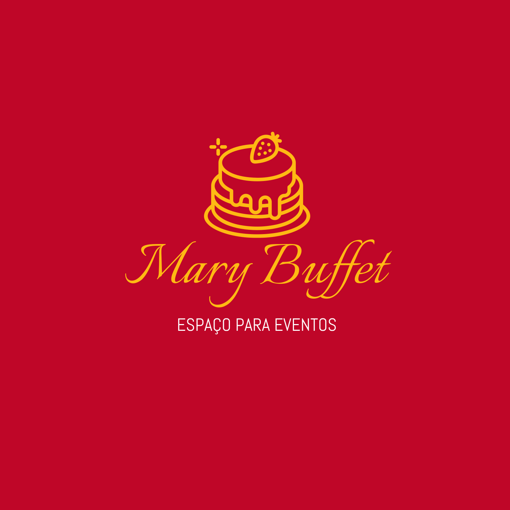

REALIZANDO SONHOS, CRIANDO MEMÓRIAS.
A Mary Buffet, oferece excelência em seu serviço com equipe treinada para oferecer tranquilidade e conforto. Estamos preparados para atender os mais variados tipos de eventos, como: Buffet Aniversários, Festa de 15 anos (Debutantes), Eventos Corporativos, entre outros. Aqui você poderá encontrar o melhor espaço para realizar a sua festa. Entre em contato conosco.
